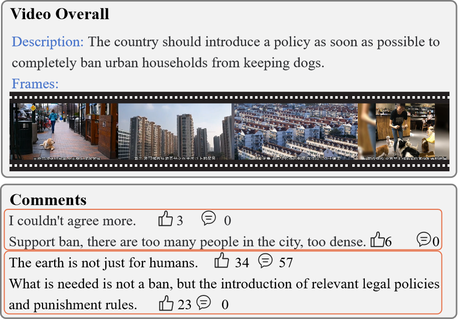
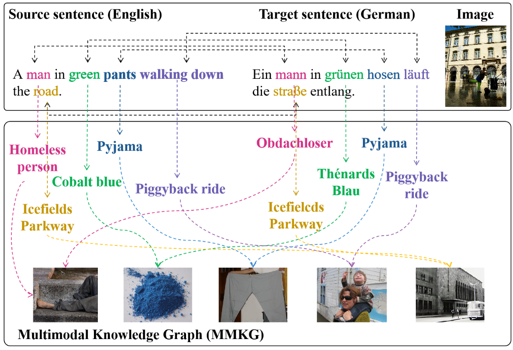
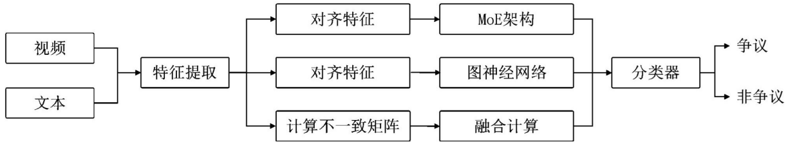

Hi there! Currently, I am a Ph.D. candidate in Computer Technology at the School of Computer Science and Technology, Shandong University, China, advised by Prof. Tian Gan. My research focuses on Multimedia Computing, with particular interests in social computing and risk communication.
Norm Mediat simulates democratic mediation by integrating normative reasoning with dynamic multimodal conflict modeling and norm-aware iterative mediation, offering a comprehensive framework and benchmark dataset for conflict resolution studies.
Generative Agents for Multimodal Controversy Detection
AgentMCD leverages LLM-based multi-aspect reasoning and multi-agent simulation to enhance multimodal controversy detection with superior performance and explainability.

A Chinese Multimodal Social Video Dataset for Controversy Detection
We construct a large-scale Chinese Multimodal Controversial Dataset (MMCD) and propose Multi-view Controversy Detection (MVCD), a framework that models controversies from multiple perspectives.

Exploiting Multimodal Knowledge Graph for Multimodal Machine Translation
Tianjiao Xu, Xuebo Liu*, Derek F. Wong*, Yue Zhang, Lidia S. Chao, Min Zhang, Tian Gan
IEEE Transactions on Multimedia (TMM), 2025 (SCI Q1, CCF B)
We propose a multimodal machine translation framework that incorporates Multimodal Knowledge Graphs to augment parallel corpora with synthetic sentence–image pairs.
Intellectual Property

A Multimodal Multi-View Controversy Detection Method and System
Developed a multimodal and multiview controversy detection framework for social media. The method integrates video and text features, models semantic–structural relations between videos and comments via context graphs, and captures inconsistencies through sentiment–semantic matrices, significantly improving detection accuracy.
Selected Honors & Scholarships
SIGMM Student Travel Grant 2024
First-Class Scholarship (Top 2%), awarded annually in 2017–2020 and 2023–2024
Outstanding University Student Medal (Top 10 in School), awarded by GDUFS
Chinese Collegiate Computing Competition (4C) — Second Prize (once), Third Prize (three times)
National College Contest in Big Data Analysis and Mining — Third Prize
Global Management Challenge (GMC), Macau Region — Fourth Prize
Academic Services
Conference Reviewer: ACM MM (CCF A)
Journal Reviewer: IEEE Transactions on Image Processing (SCI Q1), Information Sciences (SCI Q1), IEEE Transactions on Computational Social Systems (SCI Q3)